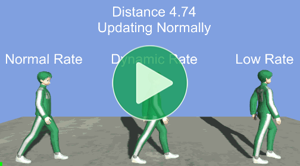
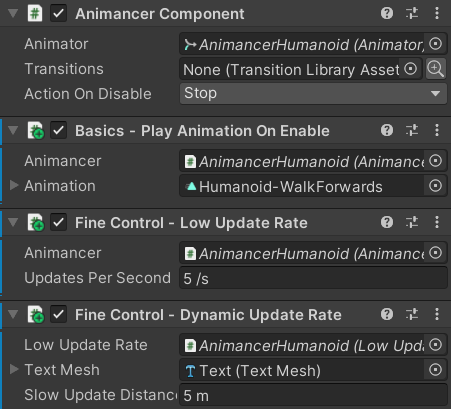

Location: Samples/02 Fine Control/04 Update Rate
Recommended After: Quick Play
Learning Outcomes: in this sample you will learn:
How to improve performance by updating animations less frequently.
How to create a stop motion effect by updating animations less frequently.
How to update far away objects less frequently than nearby ones.
Summary
This sample demonstrates how you can potentially improve performance by updating Animancer less frequently instead of every frame. The following video shows 3 characters:
- Normal Rate: updates every frame as usual.
- Dynamic Rate: updates every frame if the character is close to the camera, but starts limiting the update rate if it gets further away.
- This can potentially improve performance without notably hindering gameplay because characters far away from the camera are usually less important.
- Low Rate: updates a limited number of times per second.
- This can make the animation look like Stop Motion, which can look quite good with certain art styles.

- To prevent Unity from updating animations normally, call
animancerComponent.Graph.PauseGraph();. - To update animations manually, call
animancerComponent.Evaluate(deltaTime);.
Overview
The code structure is fairly straightforward:
{kind=link}
All three characters use a PlayAnimationOnEnable component from the Quick Play sample to play the animation.
The Low Rate and Dynamic Rate characters both use the LowUpdateRate script which pauses Animancer's normal updates and instead manually updates it less frequently:
using Animancer;
using UnityEngine;
public class LowUpdateRate : MonoBehaviour
{
[SerializeField] private AnimancerComponent _Animancer;
[SerializeField, PerSecond] private float _UpdatesPerSecond = 5;
private float _LastUpdateTime;
protected virtual void OnEnable()
{
_Animancer.Graph.PauseGraph();
_LastUpdateTime = Time.time;
}
protected virtual void OnDisable()
{
if (_Animancer != null && _Animancer.IsPlayableInitialized)
_Animancer.Graph.UnpauseGraph();
}
protected virtual void Update()
{
float time = Time.time;
float timeSinceLastUpdate = time - _LastUpdateTime;
if (timeSinceLastUpdate > 1 / _UpdatesPerSecond)
{
_Animancer.Evaluate(timeSinceLastUpdate);
_LastUpdateTime = time;
}
}
}
The Dynamic Rate character also has a DynamicUpdateRate script which enables or disables its LowUpdateRate script depending on how far the character is away from the camera (and displays the current details using a TextMesh):
using Animancer;
using Animancer.Units;
using UnityEngine;
public class DynamicUpdateRate : MonoBehaviour
{
[SerializeField] private LowUpdateRate _LowUpdateRate;
[SerializeField] private TextMesh _TextMesh;
[SerializeField, Meters] private float _SlowUpdateDistance = 5;
private Transform _Camera;
protected virtual void Awake()
{
_Camera = Camera.main.transform;
}
protected virtual void Update()
{
Vector3 offset = _Camera.position - transform.position;
float squaredDistance = offset.sqrMagnitude;
_LowUpdateRate.enabled = squaredDistance > _SlowUpdateDistance * _SlowUpdateDistance;
float distance = Mathf.Sqrt(squaredDistance);
string updating = _LowUpdateRate.enabled ? "Slowly" : "Normally";
_TextMesh.text = $"Distance {distance:0.00}\nUpdating {updating}\n\nDynamic Rate";
}
}

Controlling Updates
Controlling when Animancer updates is very easy:
- Get the
AnimancerComponentyou want to control:
public class LowUpdateRate : MonoBehaviour
{
[SerializeField] private AnimancerComponent _Animancer;
- Call
AnimancerGraph.PauseGraphtop prevent it from updating on its own:
protected virtual void OnEnable()
{
_Animancer.Graph.PauseGraph();
}
- Call
AnimancerComponent.Evaluatewhen you want to update it:
protected virtual void Update()
{
...
_Animancer.Evaluate(...);
}
}
Low Update Rate
The LowUpdateRate script wants to update Animancer at a specific frequency, so it has an Inspector field to set how often it updates and it also needs to remember when it last updated.
public class LowUpdateRate : MonoBehaviour
{
[SerializeField] private AnimancerComponent _Animancer;
[SerializeField, PerSecond] private float _UpdatesPerSecond = 5;
private float _LastUpdateTime;
[PerSecond] is a Units Attribute which causes the field to display a /s suffix in the Inspector to indicate that the value is measured as "per second".
Every Update it can simply calculate how much time has passed since it last updated Animancer:
protected virtual void Update()
{
float time = Time.time;
float timeSinceLastUpdate = time - _LastUpdateTime;
If enough time has passed based on the desired number of _UpdatesPerSecond then it tells Animancer to Evaluate its animations, using the timeSinceLastUpdate as the deltaTime parameter so that Animancer knows how much to advance the animation time:
if (timeSinceLastUpdate > 1 / _UpdatesPerSecond)
{
_Animancer.Evaluate(timeSinceLastUpdate);
_LastUpdateTime = time;
}
}
LowUpdateRate is also designed to be enabled and disabled by DynamicUpdateRate so it grabs the current time when enabled to store as the _LastUpdateTime:
protected virtual void OnEnable()
{
_Animancer.Graph.PauseGraph();
_LastUpdateTime = Time.time;
}
And when disabled it calls AnimancerGraph.UnpauseGraph to let Animancer update normally again. Since Unity also calls OnDisable when destroying the object as well (such as when loading a different scene) it needs to make sure the AnimancerComponent still exists and is still initialized before doing so (otherwise accessing _Animancer.Graph would initialize it again):
protected virtual void OnDisable()
{
if (_Animancer != null && _Animancer.IsPlayableInitialized)
_Animancer.Graph.UnpauseGraph();
}
Dynamic Update Rate
Simply updating all animations less often would usually look bad, so many games only decrease their animation update rates for characters that are far away from the camera because that means they are smaller on screen and the player is less likely to be looking closely at them. That's what the DynamicUpdateRate script does by simply enabling and disabling the LowUpdateRate script as necessary.
public class DynamicUpdateRate : MonoBehaviour
{
[SerializeField] private LowUpdateRate _LowUpdateRate;
[SerializeField, Meters] private float _SlowUpdateDistance = 5;
[Meters] is another Units Attribute which gives an m suffix in the Inspector.
Finding the Camera.main is a relatively slow operation so we cache its Transform on startup to avoid needing to find it again every update:
private Transform _Camera;
protected virtual void Awake()
{
_Camera = Camera.main.transform;
}
Every Update it checks the distance between itself and the camera to decide whether or not the LowUpdateRate script should be enabled.
As mentioned in the Vector Magnitude section, calculating the squared distance is faster than calculating the actual distance so in this case we can do that and compare it to the squared distance threshold.
protected virtual void Update()
{
Vector3 offset = _Camera.position - transform.position;
float squaredDistance = offset.sqrMagnitude;
// enabled = true if the distance is larger.
// enabled = false if the distance is smaller.
_LowUpdateRate.enabled = squaredDistance > _SlowUpdateDistance * _SlowUpdateDistance;
...
For the sake of this sample, we also want to show what it's currently doing internally so we just display those details using a TextMesh.
[SerializeField] private TextMesh _TextMesh;
protected virtual void Update()
{
...
float distance = Mathf.Sqrt(squaredDistance);
string updating = _LowUpdateRate.enabled ? "Slowly" : "Normally";
_TextMesh.text = $"Distance {distance:0.00}\nUpdating {updating}\n\nDynamic Rate";
}
}
Further Development
The scripts used in this sample could be used in a real game (without the TextMesh), but there are a few more ways the idea could be improved upon to get even better performance and fine tune the visual appearance.
Events
Keep in mind that updating animations at a lower rate will also affect Animation Events and Animancer Events so it might not be an option if you're relying on their precise timing. The same applies if you're using physics hitboxes based on the character's bone positions. In these cases you might need indicate which animations are important so that the system doesn't lower the character's animation update rate while the timing is critical or maybe when characters are close to each other.
Singleton
Every MonoBehaviour event method that Unity calls (such as OnEnable or Update) has a larger performance cost than calling a method normally in C#. This means that it is actually more efficient (but more complex) to have a single script in the scene for Unity to Update which has a list of all the other things you want it to update.
Staggered Updates
- Controlling the animation updates of your characters using individual scripts like in this sample would allow their low update rates to get enabled and disabled at different times depending on the exact frame when they each go in or out of the camera range. Multiple characters might update in the same frame or they might not.
- Having all your characters in a list managed by a singleton script would allow it to update them all at once, which might look a bit more consistent but would mean that you have a couple of quick frames with few animations updating followed by one slow one where everything gets updated.
- But you could get even better performance by only updating some of the characters in the list each frame.
For example, if you have 100 characters and want 5 updates per second while the game is running at 50 frames per second, that means you only need one animation update every 10 frames so you could either:
- Do nothing for the first 9 frames then update them all at once.
- Or update 10 of them every frame to keep the performance cost more consistent.
Other Factors
- Variable Rates: there is no reason why the system would need to be limited to only "update every frame" or "update 10 times per second". You could have multiple different rates at different distances (possibly corresponding to LOD distances) or you could calculate a variable rate to be proportional to the distance without using explicit thresholds or even adapt based on the current frame rate.
- Size: you could account for the size of a character (possibly based on its
Renderer.bounds) when determining how far away it needs to be before you start dropping its update rate. A large character could still be clearly visible on screen at a distance where a smaller character might be less distinct. - Priority: less important characters like background critters could have their update rate decreased more aggressively than key characters like players and bosses.
- Visibility: characters that aren't even on-screen (easily checked using
Renderer.isVisible) might not need to update very often. Note that theAnimator.cullingModealso has some options to control what gets animated when it is off-screen.
Animation Rigging
If you want to pause and manually update Animancer while using Unity's Animation Rigging package, you will need to set it up as explained in the Paused Graph section.